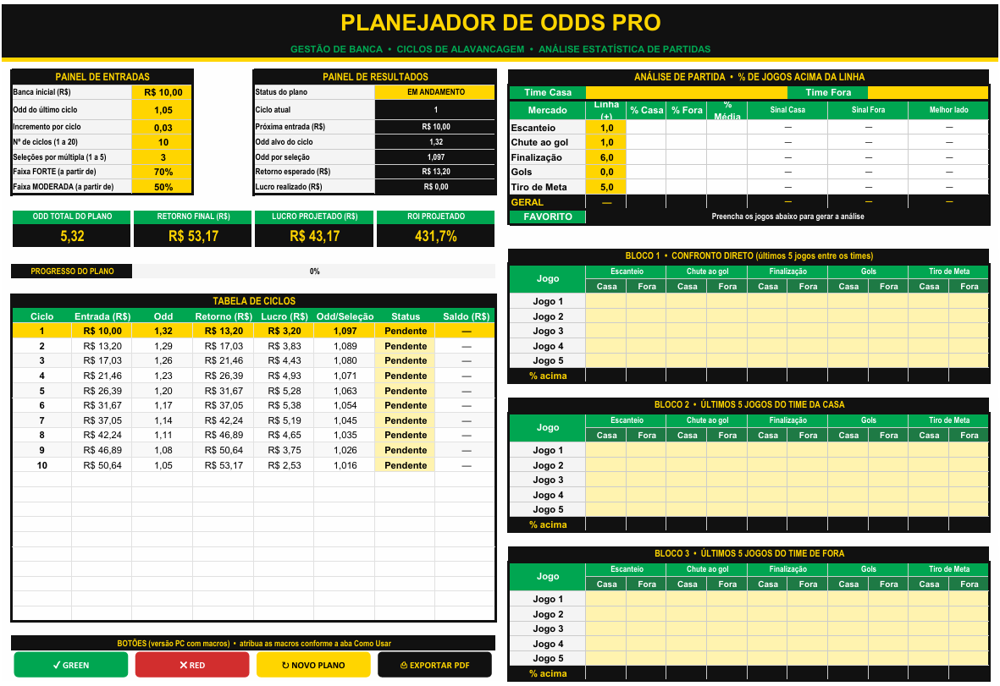
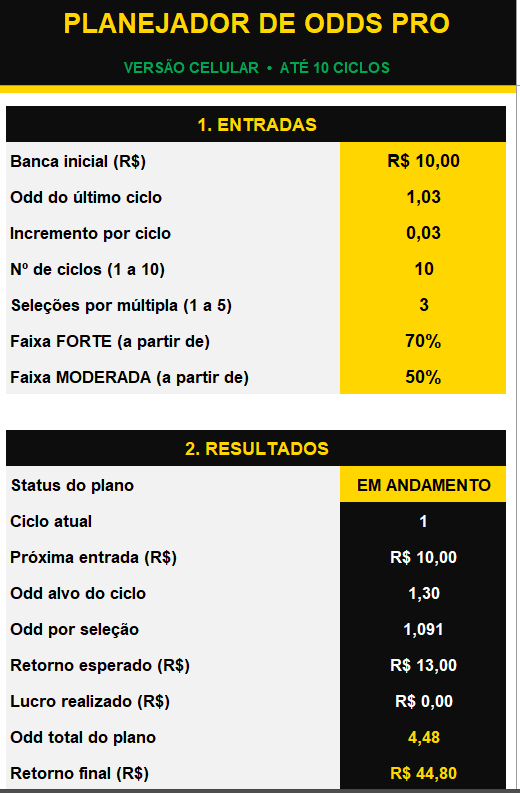
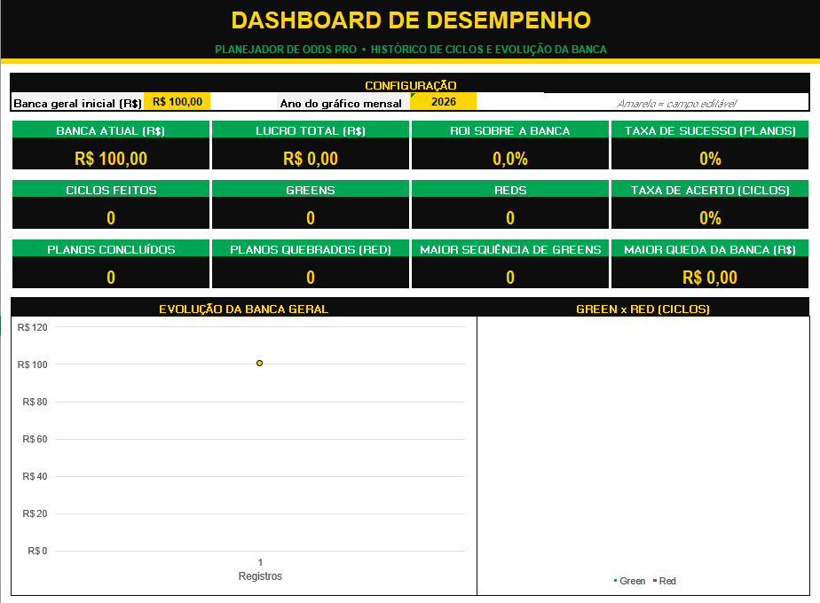

O Planejador de Odds PRO calcula entradas, odds-alvo e retorno de cada ciclo, registra seus resultados e mostra a evolução da sua banca em um dashboard completo.
Quero organizar minha gestão
Define a entrada no "achismo" e perde o controle do plano.
Não sabe quantos greens e reds teve nem se está no lucro.
Perde tempo calculando odd de múltipla e retorno a cada ciclo.
Escolhe o lado da aposta sem olhar os números dos últimos jogos.
Preencha as células amarelas e a planilha faz o resto.
De 1 a 20 ciclos, com entrada, odd-alvo, retorno e lucro calculados automaticamente.
Escolha de 1 a 5 jogos na múltipla e veja a odd que cada seleção precisa ter.
Escanteios, chutes, finalizações, gols e tiro de meta, com sinal FORTE, MODERADO ou FRACO.
Banca atual, lucro, ROI, taxa de acerto, sequências e gráficos de evolução.
Cada plano finalizado é registrado sozinho, com data, resultado e banca.
Exporte seu plano em PDF com um clique para guardar ou compartilhar.
O mesmo design e as mesmas funções, no computador ou no celular.


Cada plano concluído atualiza o dashboard automaticamente. Chega de perder o controle da banca.
*Valores ilustrativos de um plano de exemplo. Não representam garantia de resultado.
Em menos de 2 minutos você monta seu primeiro plano.
Informe a banca, a odd e o número de ciclos nas células amarelas.
A planilha mostra quanto entrar e qual odd buscar em cada ciclo.
Clique em GREEN ou RED e o próximo ciclo é calculado sozinho.
Veja sua banca, o lucro e as estatísticas no dashboard.
Se a planilha não atender o que você espera, peça o reembolso em até 7 dias e devolvemos 100% do valor, sem perguntas.
Não. Você só preenche as células amarelas e clica nos botões. A planilha vem com um guia "Como Usar".
Sim. Há uma aba feita para celular, que funciona no app gratuito do Microsoft Excel (Android e iPhone).
As fórmulas funcionam, mas os botões com macros exigem o Excel para Windows. No Google Planilhas e no Excel Online, use a aba Celular, que não depende de macros.
A versão PC usa macros para os botões. Clique em "Habilitar Conteúdo" ao abrir o arquivo para ativá-los.
Assim que o pagamento é aprovado, você recebe o link de download no seu e-mail.
Não. Ela é uma ferramenta de organização e gestão. Os resultados dependem das suas decisões e do risco de cada aposta.
Organização, controle da banca e decisões baseadas em números.
Quero o Planejador PRO